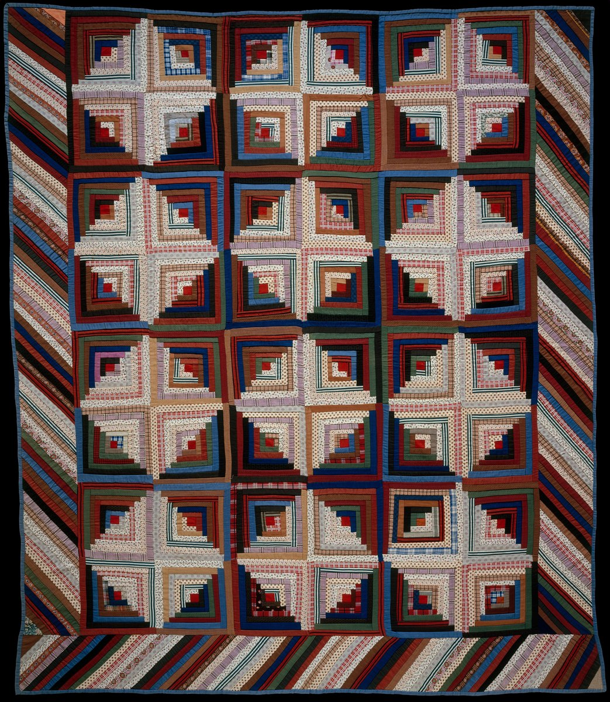

How do a series of still images become the illusion of motion, and what makes that motion feel like it belongs together?
Every animation you have ever watched, from a flipbook to a feature film, is built from still images shown quickly in sequence. This module you learn the basic vocabulary of animation and the design principle of unity, then build your own short animation using tools you already know: Pixlr E for the frames, and a free browser tool to bring them to life.
👀 PART 1 · LOOK FIRST
Animation works because of a quirk of human vision: when still images are shown fast enough, one after another, your eye blends them into motion instead of seeing separate pictures. Each still image in the sequence is called a frame. Look at this simple four-frame sequence of a bouncing ball.
Michael Maggs (edited by Richard Bartz), Bouncing Ball, stroboscopic photograph, 2007. CC BY-SA 3.0. Source: commons.wikimedia.org
Real stroboscopic photograph: many exposures of one ball, layered into a single image, showing its position at each instant. Hand-drawn frame-by-frame animation captures the same idea with a few chosen positions instead of dozens.
💭 QUICK CHECK-IN · NO WRONG ANSWER
Where have you seen frame-by-frame animation, in any form?
📚 PART 2 · ANIMATION FUNDAMENTALS
A few core terms describe how any animation, simple or complex, is built:
Frame. One single still image in an animated sequence.
Frame-by-frame animation. A technique where the artist draws or edits every single frame by hand, giving full control over each moment of the motion. This is the method you will use this module.
Keyframe. A frame that marks an important position or pose in the motion, such as the very start, the very end, or the highest point of a bounce. In longer productions, artists often draw keyframes first, then fill in the frames between them.
Timing. How long each frame is shown before the next one appears, and how many frames are used to cover a movement. Fast timing (few frames, shown briefly) feels sudden or energetic; slow timing (more frames, or frames shown longer) feels smooth or heavy.
💡 MORE FRAMES IS NOT ALWAYS BETTER
A bouncing ball can read clearly with just 4 to 6 well-chosen frames. What matters most is choosing the right keyframes, the poses that define the motion, not simply adding more frames. Professional animation often runs at 12 or 24 frames per second, but a student GIF built from a handful of deliberate frames can still communicate motion clearly.
🔍 PART 3 · UNITY: MAKING THE FRAMES FEEL LIKE ONE THING
Unity is the principle of design that makes separate parts feel like they belong to one whole. In an animation, unity means every frame needs to look like the same subject, just at a different moment, not like a different drawing each time. Without unity, a sequence of frames feels jumpy and disconnected instead of like continuous motion.

Quilt, Log Cabin pattern, Light and Dark variation, American, about 1865. Wool and cotton. Metropolitan Museum of Art. Public domain. Source: metmuseum.org/art/collection/search/13894
Both are real American quilts. The Log Cabin quilt repeats one block, size, and color logic across the entire surface, so it reads as a single unified pattern from across a room. The Crazy Quilt tradition deliberately breaks from that repetition, piecing together many unrelated fabrics and printed images with no repeating module, so it reads instead as many small, separate pictures. Neither approach is wrong; they are different, deliberate design choices. Your animation frames need the Log Cabin kind of consistency.
With unity
Same size, same colors, same style, and same canvas position across every frame. Only the specific detail that is moving (a limb, a ball, an eye) changes from frame to frame.
Without unity
The subject shifts size or position accidentally, colors drift, or line weight changes between frames. The eye reads it as several different drawings, not one moving subject.
🎨 BUILDING FRAMES IN PIXLR E
Create one canvas at a fixed size (for example, 600 x 600 pixels) and keep that same size for every frame; do not resize partway through. Duplicate your base drawing as a new layer for each frame, then edit only the part that moves on that layer's copy, keeping your background and unmoving elements identical. Export each frame as its own PNG, numbered in order (frame1.png, frame2.png, and so on), so you can assemble them correctly afterward.
Pixlr E does not have a built-in animation timeline, so the assembly step happens in a separate free browser tool. This course does not require one specific tool; any free browser-based GIF maker that lets you upload a sequence of images and set a frame delay will work. Search for "free online GIF maker" and look for one that supports image upload, frame ordering, and a frame-delay setting, with no software installation required.
⚡ TRY IT · ANIMATION VOCABULARY
Match each situation to the correct term, then check your answer.
An animator draws the very top of a ball's bounce and the moment it hits the ground before filling in anything else.
Every frame of a walking character keeps the same size, colors, and line style, so the walk feels continuous instead of jumpy.
⚠️ WORTH KNOWING · AI VIDEO AND ANIMATION TOOLS
AI video generators can produce moving footage from a text prompt without the artist drawing individual frames. They cannot teach you why a keyframe matters or how to keep unity across a sequence, which is what this lesson and its exercise are built to practice. Your graded animation this module is built frame by frame in Pixlr E, by you.
📝 VOCABULARY
FrameOne single still image in an animated sequence.
Frame-by-Frame AnimationA technique where the artist draws or edits every frame individually.
KeyframeA frame marking an important position or pose in the motion.
TimingHow long each frame is shown, and how many frames cover a movement.
UnityThe design principle that makes separate parts feel like they belong to one whole.
Frame RateHow many frames are shown per second of animation.
GIFA common file format for short, looping animations built from a sequence of frames.
➡️ WHAT YOU'LL DO NEXT (IN CANVAS)
1
Module 28.01 Mini Lesson: Frame Planning Sheet
Sketch or describe your planned keyframes for a 3-5 frame animation before you build them. Completion grade.
2
Module 28.02 Discussion: Unity in Motion
Find a short animation or GIF and identify one place unity is used well or broken.
3
Module 28.03 Quiz: Animation Fundamentals
8 questions, auto-graded in Canvas.
4
Module 28.04 Studio Project & Reflection: 3-5 Frame Animation
Draw 3 to 5 frames in Pixlr E showing one simple motion, keeping unity across frames, then assemble them into a GIF using a free browser tool. Your graded artwork this module.
💪 THE BIG IDEA
Animation is proportion and form's cousin in time: instead of convincing the eye a flat shape has volume, it convinces the eye that separate still frames are one continuous motion. Good keyframes and honest unity between frames do more work than sheer frame count. You already have the drawing skills; this module you just add the fourth dimension, time.
Optima Academy Online · DIGITAL ART IMAGING · Quarter 4 · Student Lesson Page